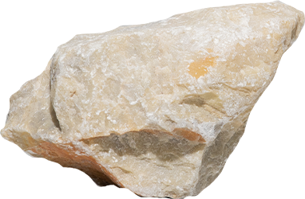
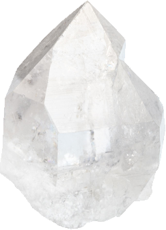
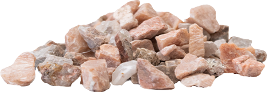
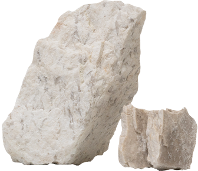
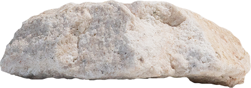
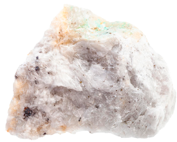
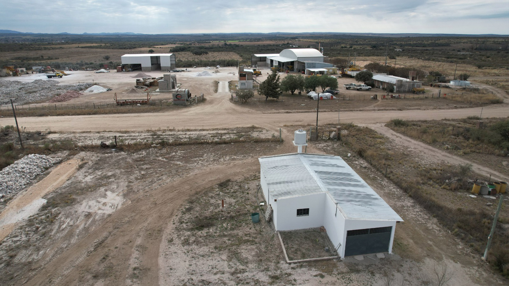
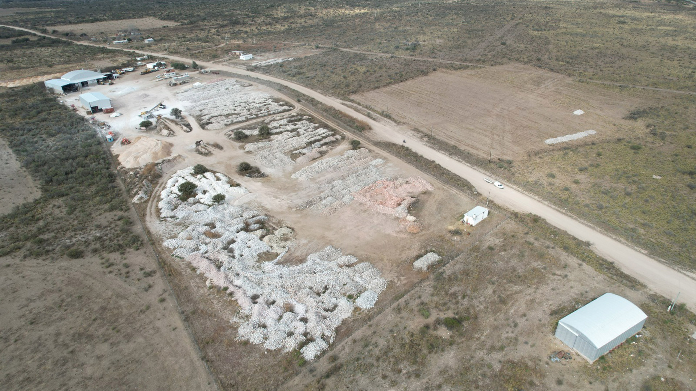

Molienda de Minerales
Procesamiento de minerales industriales de alta calidad
Molienda de Minerales
El establecimiento "VOLADURAS SAN LUIS SRL" está ubicado al sureste de la localidad de Villa Praga, en el Departamento Libertador General San Martín, provincia de San Luis.
La actividad principal se centra en la molienda de minerales como feldespato potásico, albita, cuarzo y fluorita. Nuestros productos se emplean en la fabricación de cerámicos, porcelanatos, sanitarios, pinturas, esmaltes, vajilla y aparatos eléctricos.

Calidad
Certificada
Etapas de Molienda
Proceso optimizado en tres etapas para garantizar la calidad del producto final
Zaranda Fina
Clasificación y separación del material por granulometría para preparar la materia prima antes de la molienda.
Molienda Primaria
Reducción inicial del mineral a partículas más pequeñas mediante molinos de alta capacidad.
Molienda Secundaria
Pulido final hasta alcanzar las granulometrías requeridas por el cliente (#400, #325, #200, etc.).
Minerales que procesamos
Contamos con yacimiento de provisión propia en Villa Praga, San Luis

Pirofilita

Cuarzo

Feldespato Potásico

Feldespato Potásico Mezcla

Feldespato Sódico

Chamote

Baritina
Fluorita
Capacidad Operativa
Infraestructura y maquinaria para procesamiento de minerales
Motocompresores 5
- Motocompresor 900Q Mod.2015
- 4 Motocompresores portátiles Sullair 185Q-JD (2019)
Habilitaciones 2
- Polvorín móvil PB2911 Tipo B - Villa Praga, San Luis
- Polvorín tipo C PC 2910, 8 TN explosivos - Villa Praga, San Luis
Movilidad 18
- 8 Pick-Up TOYOTA HILUX 4X4 (2016-2023)
- Camiones SCANIA, IVECO, MERCEDES BENZ, FORD
- 2 Semirremolques carretón
- Flota autorizada para cargas peligrosas
Perforaciones 10
- 4 SANDVIK RANGER 500 · 1 SANDVIK RANGER ID 500
- FURUKAWA HCR 910 DS RP (2011)
- 3 SANDVIK DX 680 (2014-2017) · SANDVIK DX 800 (2023)
Cargadoras 6
- CATERPILLAR 212 · KOMATSU PC200-7 · KOMATSU PC 300
- CATERPILLAR 426 C 4X4 · SDLG · JHON DEERE JD 200 GLC
Instrumental 3
- Nivel Óptico - GPS
- 2 Sismógrafos MINIMATE BLASTER SYSTEM
Clientes y proyectos
Proveemos minerales procesados a las principales empresas del país
LIPAR · PRINGLES · SILICA MINERA
Provisión de minerales procesados
LIPAR · PRINGLES · SILICA MINERA
Provisión de minerales procesados
LIPAR · PRINGLES · MOLINOS ALIANZA · SILICA MINERA · LISTA S.A.
Provisión de minerales procesados
MOLINOS ALIANZA · KHALIQ ANWAR · LIPAR · PRINGLES · SILICA MINERA
Provisión de minerales procesados
PIEDRA GRANDE · GLOBE METALES · ROAR NASCHEL · LIPAR · PRINGLES
Provisión de minerales · Cuarzo triturado
PIEDRA GRANDE · GLOBE METALES · ROAR NASCHEL · LIPAR
Provisión de Minerales · Cuarzo triturado
Nuestra planta



